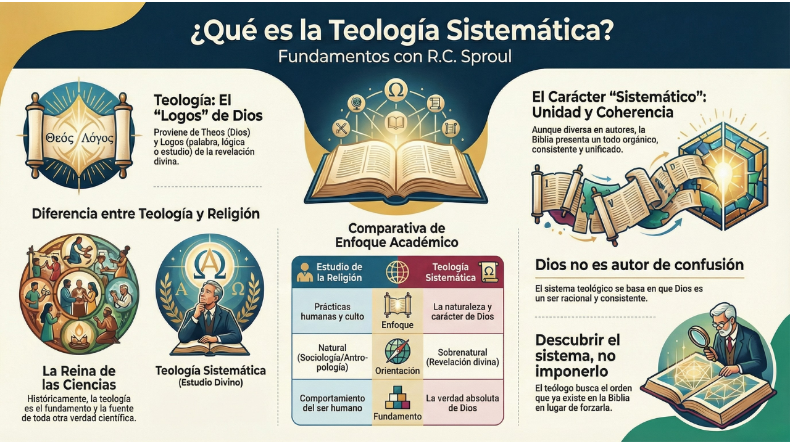
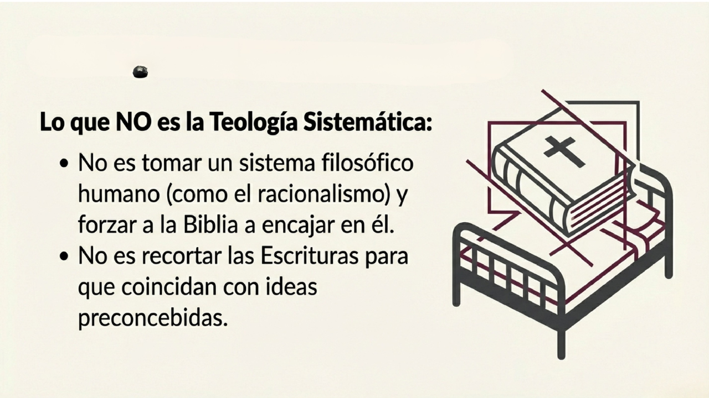
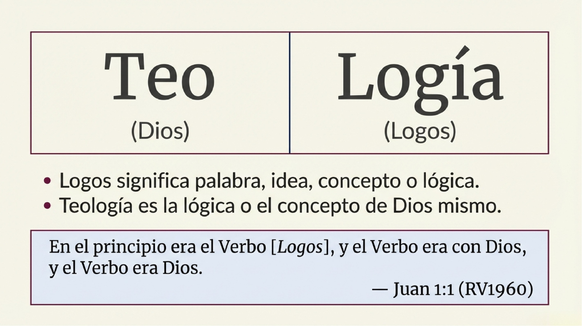
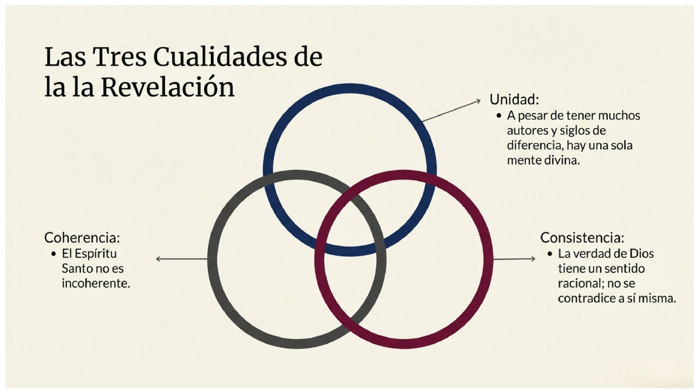
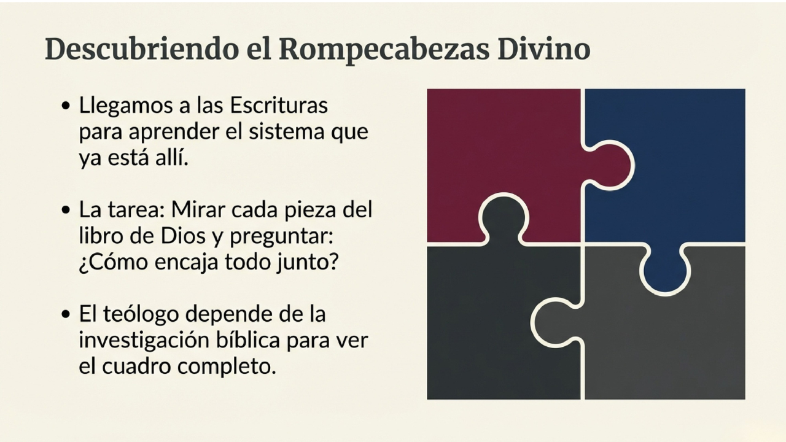

Un Mapa para el Estudiante Bíblico
En el panorama de la educación bíblica contemporánea, la precisión terminológica no es una cuestión de semántica árida, sino el cimiento indispensable sobre el cual se construye todo el edificio del conocimiento cristiano. Para el estudiante, definir la teología con rigor es el primer paso para rescatar esta disciplina de la percepción común que la cataloga como una "ciencia misteriosa" o un anacronismo. Una definición correcta actúa como un filtro intelectual que separa la especulación humana de la recepción de la verdad divina.
La etimología de la palabra "Teología" nos ofrece la clave para entender su profundidad científica, basándose en dos raíces griegas fundamentales:
Para comprender el peso de este sufijo "-logía", debemos observar su uso en otras disciplinas: la Biología es la palabra o lógica de la vida; la Zoología, la lógica del reino animal; y la Antropología, el logos sobre el anthropos (el hombre). Por tanto, la Teología es, en su sentido más estricto, el estudio de la "lógica de Dios mismo". No es un mero discurso humano sobre la divinidad, sino la exploración del concepto y la razón que emanan del carácter del Creador. Esta disciplina se ramifica en diversas sub-áreas esenciales, como la Cristología Pneumatología Hamartiología Escatología y la Teología Propia.
Existe una diferencia categórica entre el estudio de la fe y el estudio de las prácticas humanas, una distinción que se ha desdibujado en la academia moderna. R.C. Sproul relataba su visita a una universidad cristiana que, tras jubilar a su presidente, realizaba un autoanálisis de su plan de estudios. Al recorrer el campus, notó que el antiguo "Departamento de Teología" se llamaba ahora "Departamento de Religión". Al preguntar a un profesor con 40 años de trayectoria sobre la razón de este cambio ocurrido décadas atrás, la respuesta fue reveladora: "No lo sé". Este desconocimiento ilustra un giro estratégico inconsciente pero devastador: el abandono de la búsqueda de la verdad de Dios por el análisis del comportamiento humano.
Para clarificar esta transición, evaluemos los diferenciadores clave:
| Característica | Teología | Estudios de Religión |
|---|---|---|
| Objeto de Estudio | La naturaleza y el carácter de Dios mismo. | Las prácticas, conductas y sociología humana. |
| Orientación | Sobrenatural: Trata sobre lo que está por encima y más allá de este mundo. | Natural: Estudia cómo los seres humanos se comportan en su entorno de culto. |
| Estatus Histórico | Considerada la "Reina de las Ciencias". | Vinculada a la Antropología y la Sociología. |
| Premisa Fundamental | La verdad de Dios como fuente de toda otra verdad. | La religión como un fenómeno cultural discreto y horizontal. |
Clásicamente, la teología ostentaba el trono de las ciencias porque se entendía que toda disciplina (economía, física o matemáticas) debía interpretarse a la luz de la realidad de Dios. En este esquema, la filosofía actuaba como su "sirvienta" (ancilla theologiae), proporcionando las herramientas lógicas para articular la revelación. El estudiante debe comprender que este curso no trata sobre cómo el hombre busca a Dios, sino sobre cómo Dios se revela a Sí mismo "desde arriba".
En la actualidad, el término "sistemático" genera una resistencia cultural, una suerte de "alergia" intelectual. Este rechazo es hijo del existencialismo, una filosofía que postula que no existe una esencia universal, sino solo la existencia particular y fragmentada. Para el existencialista, el mundo es un caos carente de significado general, donde solo existen verdades relativas y fragmentos de experiencia diaria. Al negar un propósito general, el existencialismo aborrece cualquier sistema de pensamiento coherente.
Sin embargo, la Teología Sistemática no es un intento de imponer un orden humano a la Biblia, sino de descubrir el Cosmos (orden) que Dios ha establecido en Su revelación. Debemos precavernos de un error metodológico común:
En la mitología, el bandido Procusto mutilaba o estiraba a sus huéspedes para que encajaran exactamente en su cama de hierro. En el ámbito teológico, esto ocurre cuando un estudiante adopta un sistema filosófico externo —como el racionalismo de Descartes o el empirismo de Locke— y fuerza las Escrituras a encajar en esa red preconcebida. La verdadera teología sistemática no "aprieta" la Biblia dentro de un sistema filosófico natural, sino que extrae el sistema de la Biblia misma, escuchando la Palabra en sus propios términos.
La teología sistemática descansa sobre la premisa de que Dios no es el autor de la confusión. Si Dios es un ser de orden, Su revelación debe ser inteligible y racional. Esto no significa que la fe sea el fruto de la especulación humana, sino que la verdad divina, al provenir de una mente perfecta, manifiesta tres pilares críticos:
Estos pilares permiten al estudiante ver las Escrituras no como un conjunto de fragmentos aislados, sino como un todo orgánico y significativo.
El teólogo sistemático no trabaja en el vacío; su labor es arquitectónica. Mientras que los departamentos de Antiguo y Nuevo Testamento actúan como "especialistas de datos" que investigan el texto minuciosamente, el sistemático depende de la información que estos estudiosos traen a la mesa. Su tarea es reunir esos datos y construir el mosaico completo, mostrando cómo encaja cada pieza.
Esta labor revela una simetría intrincada. Un punto doctrinal impacta necesariamente en todos los demás. Consideremos el Nacimiento Virginal:
Esta "reacción en cadena" demuestra que la teología no es una colección de opiniones, sino un sistema interconectado. Para el estudiante, el proceso es claro:

(Toca la imagen para ampliar)




Utilice estos puntos para evaluar si su estudio mantiene el rigor de la teología sistemática clásica: